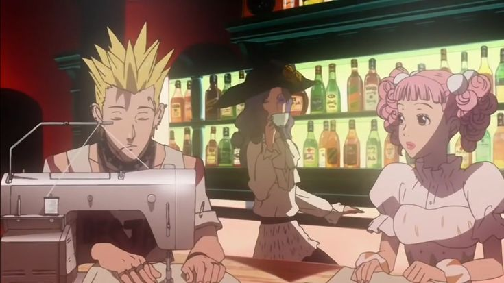
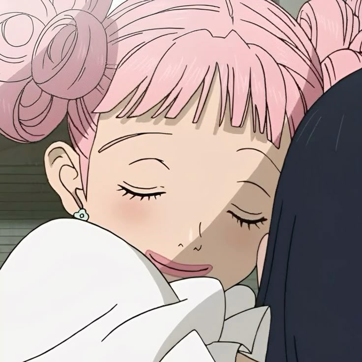
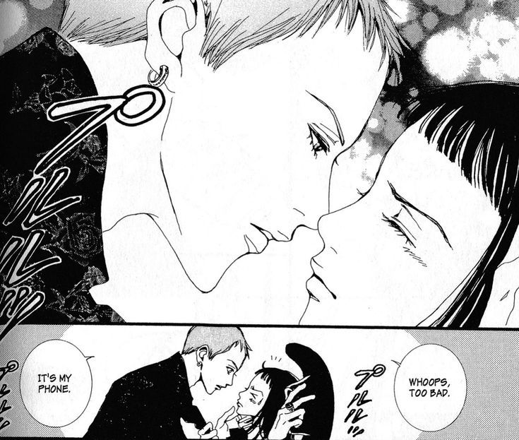

Paradise kiss: uma história sobre moda, romance e amadurecimento
꒰ঌ ໒꒱

Yukari Hayasaka é extremamente ansiosa e sofre com a pressão do vestibular. Sua rotina gira em torno dos estudos, e seu principal objetivo é se formar, ingressar na faculdade e conseguir um bom emprego. Certo dia, a caminho do cursinho, ela se depara com duas pessoas de aparência incomum. Isabella, uma mulher alta e excêntrica, e Arashi, um homem com piercings e alfinetes no rosto, estão em busca de alguém que aceite desfilar com uma peça da Paradise Kiss, sua marca de roupas. Ao perceberem que Yukari tem a altura e a fisionomia perfeitas para transmitir a imagem que desejam no desfile, tentam chamar sua atenção e correm atrás dela. Assustada com a abordagem “invasiva”, Yukari classifica a ação como uma tentativa de roubo e até mesmo de uma possível violação sexual, julgando Isabella e Arashi com base em sua aparência.

Essa atitude discriminatória surge devido à sua criação e ao convívio com pessoas que a influenciam. Com um pai executivo assalariado e uma mãe conservadora que a pressiona de forma doentia, ela não conhece e nem se interessa por nada que saia de sua zona de conforto.
Após o encontro conturbado, Yukari acaba desmaiando nos braços de Isabella. Isso a leva até o Ateliê onde ocorre a produção de roupas da “ParaKiss”.

Ainda meio desnorteada, Yukari tenta se recompor enquanto ouve a verdadeira proposta junto ao resto da equipe. Todos ali são estudantes de moda do terceiro ano no renomado Instituto de Artes Yazawa, e o desfile faz parte de um festival que acontece no final do ano letivo. Nesse evento, os veteranos têm a chance de usar a imaginação e serem reconhecidos pelo seu trabalho e talento. Inicialmente, a reação de Yukari é semelhante à que teve anteriormente na rua com Arashi e Isabella. Seu julgamento precipitado faz com que ela menospreze o mundo artístico, reduzindo-o a uma simples brincadeira em comparação aos seus estudos. Irritada com a intromissão, embora sinta um leve remorso pelas palavras duras, ela vai embora certa de que nunca mais voltará.
O que a impede dessa decisão é a carteirinha que ela deixa cair sem querer no meio do caminho. Miwako, a integrante que mais se apegou amigavelmente a Yukari, a encontra. Apelidando-a de Caroline, a jovem de estatura baixa e cabelo rosa é extremamente gentil, prestativa e uma das principais responsáveis por fazê-la mudar de ideia em relação ao desfile.

A paixão de Miwako pela moda, bem como todo o esforço que ela demonstra com palavras, é algo que mexe com Yukari. Quanto mais ela escuta, mais percebe que um vestibular não é capaz de definir o caráter e a índole de alguém.
À medida que Yukari começa a frequentar o Ateliê, novos questionamentos surgem. Por conta da pressão que sofre da família, ela ainda não sabe ao certo o que realmente quer fazer no futuro. Diferentemente dos integrantes da ParaKiss, que estudam o que gostam, Yukari carece de uma vocação específica. “Eu vinha correndo todos os dias dentro de um túnel escuro… sem nem olhar para os lados… em direção a saída.” Ela se sente envergonhada por isso. Acha que à sua volta, todos são confiantes, e apenas ela alimenta a insegurança e carrega dúvidas. Esse pensamento só começa a mudar quando um certo jovem orgulhoso e intimidador entra em sua rotina. George Koizumi comanda a Paradise Kiss. Inteligente, bonito e sempre vestido elegantemente, é difícil resistir ao seu charme. Yukari não demora a cair na conversa dele, o que lhe traz tanto benefícios quanto malefícios.

Mesmo apaixonada, Yukari sabe que George manipula seus sentimentos para conseguir o que quer. A fascinação por sua beleza, aliada à sua confiança, são os principais gatilhos que a fazem criar uma dependência emocional por ele. No começo, todas as suas escolhas são baseadas na aprovação de George, mas com o passar dos capítulos, Yukari começa a se impor cada vez mais e passa a agir de acordo com suas próprias vontades. Claro que esse processo lhe custa muita dor de cabeça até realmente dar certo. Ao abrir mão de uma paixão antiga, Yukari atura diversos momentos em que George se comporta de forma tóxica, mas pelo menos isso contribui para seu crescimento pessoal e profissional. “Vou amadurecer, nem que seja na base da teimosia… para conseguir pisar na passarela com a cabeça erguida.”
E por fim o desenvolvimento da protagonista é excepcional do começo ao fim. Mesmo com todas as verdades ditas, em sua maioria, de forma fria e sem rodeios, Yukari leva todas em consideração. É assim que ela consegue construir uma carreira e um futuro brilhante, onde se sente verdadeiramente feliz e satisfeita
A forma como a autora escolheu abordar os dilemas durante a transição da adolescência para a vida adulta é feita de forma sutil e sem filtros. Além de Yukari, Ai Yazawa faz questão de dar voz aos outros personagens da trama, que também têm seus próprios dilemas para enfrentar. Miwako, por exemplo, vive em um relacionamento tóxico com Arashi, e é interessante entender sua história e ponto de vista sobre o assunto, pois ambos se conhecem desde a infância. Isabella e George também mantêm laços há muitos anos, e o aspecto mais interessante sobre os dois é que ambos são abertamente membros da comunidade LGBTQIAPN+: enquanto George é bissexual, Isabella é uma mulher trans. Dada a época em que o mangá estava sendo publicado, a oportunidade de desenvolvê-los sem estereótipos ou de forma implícita era grande. A importância que Yazawa trouxe para o enredo referente à representatividade é um dos muitos pontos que evidenciam a qualidade de suas histórias.
Fonte : https://deliriumnerd.com/2023/09/26/paradise-kiss-manga-anime-ai-yazawa-critica/